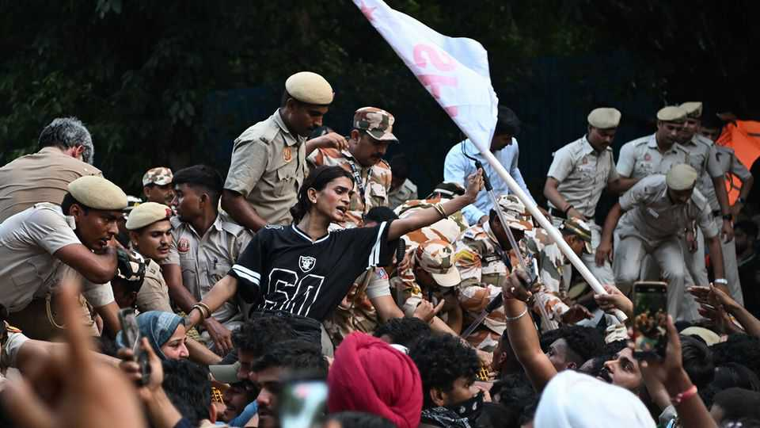
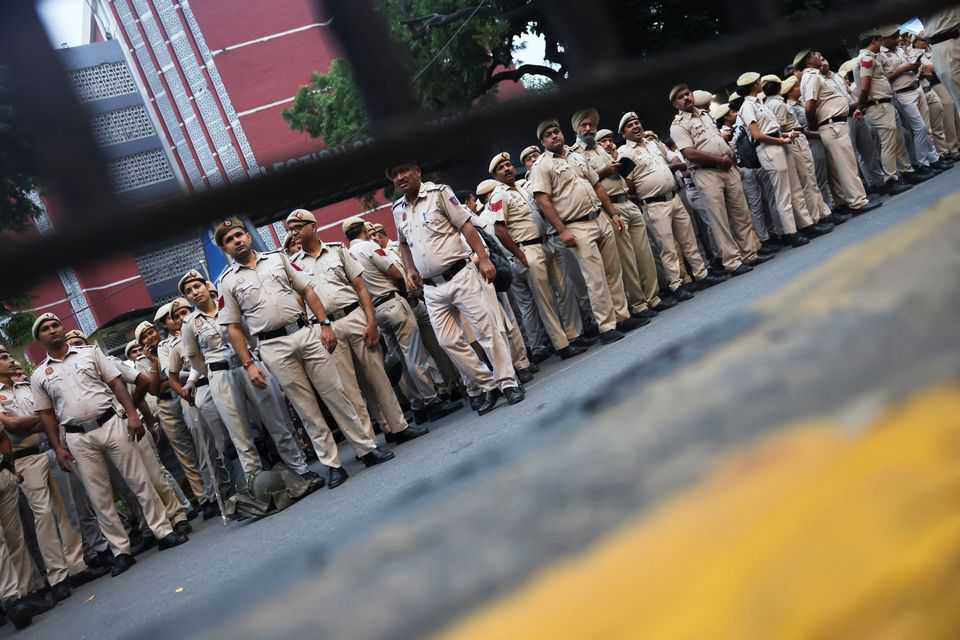

India’s government fails to crush Gen Z protests
The leader of the Cockroach party is detained and the internet shut down

Oct 15th 2026
MICROPHONES SHOVED in their faces, the youngsters raced to say their soundbites on democratic rights. Then the police van sped off with them still in mid-sentence. “That’s the only way to protest now—we just go get detained,” shrugged one. On October 10th in Delhi, drones filled the skies and tens of thousands of security men and women patrolled the strangely silent city below. India’s capital witnessed its most sweeping crackdown on peaceful protest for many years.
After 12 years in power, Narendra Modi, India’s prime minister, faces a challenge from Gen-Z protesters. In July the newly formed Cockroach Janta Party (CJP), a youth movement, staged mass protests against a corrupt exam system and poor job prospects, and eventually forced the education minister to resign. This time, the CJP is riding a wave of public anger against the voting system, which it says is rigged. The authorities are also better prepared. As soon as the CJP’s founder, Abhijeet Dipke, and his two lieutenants touched down at Delhi airport to lead the crowds at a planned rally, police arrived to snatch them away. While most of the roughly 5,000 detainees got out by nightfall, the Cockroach trio was held for 24 hours.
Central Delhi felt like a city under siege: borders sealed, internet jammed, 45 metro stations locked and loudspeakers blasting out warnings. Police bruised opposition leaders and briefly nabbed journalists and lawyers. Scattered protests emerged like flash mobs, only for baton-wielding officers to disperse them.
Though the Cockroaches were squashed over the weekend, India’s opposition alliance, led by the Congress party’s Rahul Gandhi, gathered tens of thousands for a march on October 12th. They, too, demanded that Gyanesh Kumar, the chief of India’s Election Commission, resign; that the voter-verification drive he has managed must be scrapped; and that the law which, in effect, let Mr Modi hand-pick him should go. Over the past year, a “special intensive revision” of voter lists has deleted more than 130m names, many rightly, since they were duplicates or dead people. But very many wrongfully.
The government, like the commission, denies the allegations. Kiren Rijiju, a BJP minister, calls the protests—which were refused police permission—a gimmick by those who keep losing elections. Batting away comparisons to the Emergency of the 1970s, when Indira Gandhi suspended democracy, he says: “This is not an emergency, this is normal law and order.”

For India’s long moribund opposition, the rallies against vote chori (theft) are about saving democracy and the republic. But the marches also express a more diffuse anger at years of perceived governmental missteps. Rally-goers raise shoddy schooling, jobless growth, women’s safety, minority rights and unease at India’s turn towards Hindu nationalism.
The upstart Cockroaches and India’s established opposition have both vowed to protest until the election chief resigns. But Mr Kumar is virtually unsackable, because the prime minister stands by him, for now. And the authorities are doubling down. On October 14th Mr Dipke’s two lieutenants were sentenced to five days in jail on trespassing charges. To Mr Dipke, the original Cockroach, the spectacle of the crackdown suggests the government has something to hide. “Narendra Modi and Amit Shah [the home minister] are waging a war on their countrymen just to save one Gyanesh Kumar,” he says.
The opposition’s bigger ambition concerns the national election of 2029. “People finally understand how the BJP is stealing elections,” argues a close adviser to Rahul Gandhi. ■
Stay on top of our India coverage by signing up to Essential India, our free weekly newsletter.